Draft of 8 November 2026. Affiliation and contact to be added.
Public benchmarks for wind-turbine blade defect detection report 85–92 mAP50. We audit the three most used, WTBD, Wind Surface Defect and WTBlade-Defect, with image retrieval, geometric verification and pixel correlation. We find that 78%, 84% and 92% of their official test images have a near-copy or same-scene image in the training split, because the datasets were augmented or tiled before a random split. A generic foundation detector (RF-DETR-M) with a standard recipe scores 90.4 mAP50 on WTBD’s official split and 87.2 on WTBlade-Defect’s, above the published BladeYOLO on the latter (85.8), though below it on Wind Surface (81.0 vs 86.5). The same runs lose 24 and 40 points on the Wind Surface and WTBlade-Defect test images without a training twin: on WTBlade-Defect they score 98.2 on copies of training frames and 50.4 on images with no twin. Trained with the same recipe on a scene-grouped split of the same WTBD images, the detector falls from 90.4 / 61.2 to 55.3 / 33.2 mAP50 / mAP50-95. A single step of recipe tuning against the official numbers raised the score on leaked images and lowered it on unseen ones on all three datasets, so leaderboard tuning on these splits rewards memorisation. We release two leak-free benchmarks with scene-level intervals. On them, frozen DINOv3 features account for the whole advantage of a modern YOLO variant at every label budget, and its deformable, selective-scan and loss components add nothing measurable. Fine-tuned RF-DETR leads on WTBD-group but not on WTBlade-group. We measure an annotation self-consistency ceiling of 84–87% on exact copies, a factor-of-two dependence of low-label results on which scenes are labelled, and a failure of conformal recall guarantees calibrated on seen scenes (31.5% missed against a promised 10%). Finally, more data from other sources does not replace target labels: a detector trained on 26,065 twin-free images from other datasets reaches 17.7 class-agnostic AP50 on WTBD-group test, against 72.9 for 745 target images, and 2.4 against 51.7 on WTBlade-group. A ledger of our pre-registered method tests, most of them failures, shows that the usual add-ons do not close the leak-free gap.
Blade inspection by drone is one of the more mature applications of defect detection, and the published numbers suggest a nearly solved problem. BladeYOLO [1] reports 86.5 / 57.4 mAP50 / mAP50-95 on Wind Surface Defect and 85.8 / 74.6 on WTBlade-Defect, and other recent architectures report similar levels [2–4]. This work began as an attempt to reproduce one of those results and build on it. The closest faithful reimplementation we could build stopped at about 52.6 / 28, and our next model reached 78.2 / 46.9, until we found that three-quarters of the validation images had a near-identical twin in the training set. That finding changed the question from “how do we beat this number?” to three others:
We answer them with an end-to-end audit and about two months of controlled experiments. Our contributions are measurements, not a new architecture. We tried to find a method that survives a second dataset, and did not; § 9 reports those attempts.
The authors of the papers we discuss followed common practice, which is to augment and then split at random. Our argument is about the protocol, not about them. We cannot say that any specific published number is due to memorisation, because those splits were not published.
Fig. 1 shows how the parts of the study fit together.
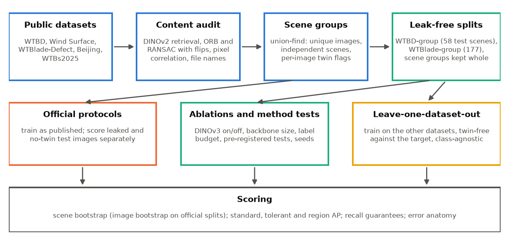
Blade defect detection. Most work adapts YOLO variants with attention, wavelet, deformable or Mamba-style modules [1–4], and several build on the DTU NordTank drone inspection imagery [5, 6]. BladeYOLO fuses frozen DINOv3 ViT-S/16 features into YOLOv12-L [1, 7], close in spirit to DINO-YOLO in civil engineering [8]. Data-descriptor papers have added new sets, notably WTBD [9] and WTBs2025 [10]. Training-free language-model inspection [11] and box-to-mask supervision [12] are recent directions, and we have not tested those specific claims on a leak-free split.
Leakage and near-duplicates. Near-duplicates between train and test are documented for CIFAR [13], geospatial mapping data [14] and more generally as a source of irreproducible machine-learning results [15]; and a fresh test set can show lower accuracy than a reused one [16]. Long-tail memorisation is a mechanism by which rare test examples are classified correctly through similar training examples [17]. We apply this line of work to blade defect benchmarks, and add a same-detector measurement of what the leak buys and what tuning on it rewards.
Foundation detectors. RF-DETR [18] fine-tunes DINOv2 [19] end to end and is strong on Roboflow100-VL [20]. DINOv3 [21] offers frozen dense features. Fine-tuning can distort pretrained features under distribution shift [22].
Label noise and granularity in evaluation. TedEval [23] handles split and merged instances in text detection. Box-annotation noise has been studied in detection evaluation [24] and in repeated labels [25], and box regression can model its own uncertainty [26]. We measure the same kind of ambiguity from accidental repeated labels: independently annotated copies of the same image.
Calibration and subset variance. Conformal risk control [27] gives distribution-free guarantees under exchangeability, and has been applied to detection [28]. Few-shot detection results vary strongly with the sampled shots [29]; we measure that variance in a realistic low-label setting and test label-free selection [30].
Multi-dataset and domain generalisation. Multi-dataset detection with partitioned label spaces [31] and training-domain model selection [32] inform our G27 and G28 designs. Copy-paste [33] is a known augmentation, and we test it only as a recipe component.
We work with the official classes of each dataset, because the taxonomies conflict (below). Fig. 2 shows random labelled examples and Table 1 summarises the audit.
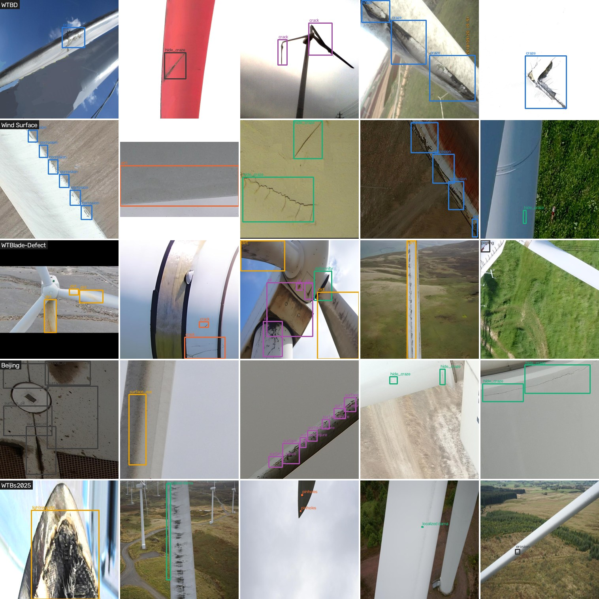
| dataset | files | unique images | independent scenes | official split (train / val / test) | test images with a training twin | how the twin arises |
|---|---|---|---|---|---|---|
| WTBD [9] | 1,065 | 597 | ~550 | 745 / 159 / 161 | 125 / 161 (78%) | duplicate and augmented copies of one photo, split at random (seed 42) |
| Wind Surface Defect [2], used by BladeYOLO | 3,570 | 954 | 81 | 2,856 / 714 (val = test) | 600 / 714 (84%) pixel twins (corr ≥ 0.99) | 1,785 originals plus one augmented copy each (550 pairs split across train and val); up to 44 tiles per drone photo (386 of 882 photos on both sides) |
| WTBlade-Defect [34], used by BladeYOLO | 10,660 | 1,146 | 803 | 9,010 / 1,097 / 553 | 499 / 542 (92%) same scene; 360 (66%) copies of a training frame | about 3 Roboflow augmentation copies per source frame; consecutive drone-video frames |
Files cannot be compared by name or hash, because the copies are flipped, rotated, recoloured or re-encoded. We combine several signals:
DJI_xxxx_r_c tile coordinates, and
_0 / _1 pairs.Example sheets were checked by eye for every dataset and outcome. On Wind Surface the first pixel comparison, flips only, found 532 of 714 validation images (75%); adding rotations and restricting to the images actually trained on gives 600 (84%). The Wind Surface “no twin” subset has no near-identical copy in training, but most of it comes from drone photos with other tiles in training, so it is cleaner rather than leak-free.
Fig. 3 shows test images and their training twins, drawn at random.
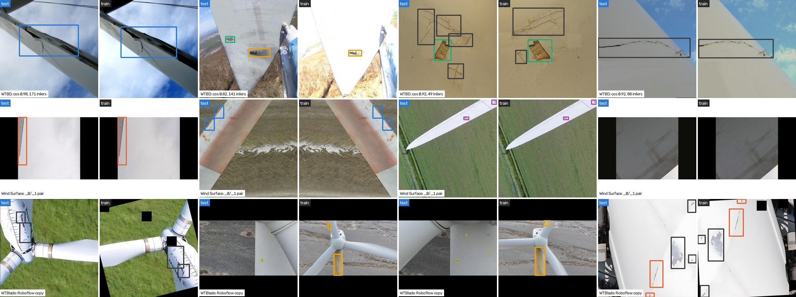
File count is a poor guide to the information in a dataset (Fig. 4).
Wind Surface’s 3,570 files come from about 81 independent scenes, and
all surface_eye boxes (412 in the raw files, 103 after
deduplication) come from tiles of a single photo. Any
surface_eye score on the original split, including
published ones, was measured on tiles of a training photo. WTBD has far
fewer files and far more independent scenes per class. Three more
findings limit what can be merged:
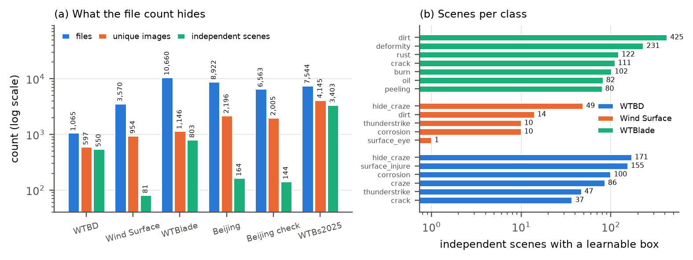
The same augment-then-split pattern appears in other published work: 130 DTU images expanded to 780 and then split 624 / 78 / 78 [4], and CLAHE copies with a random 60 / 40 split of repeated shots of one turbine [3]. BladeYOLO’s WTBlade numbers use its authors’ own 9:1 re-split of 5,326 images, which is not public [1].
WTBD-group. The 1,065 WTBD images are split by scene into 745 / 159 / 161 images (the official sizes), with 1,109 / 240 / 235 boxes and 224 / 60 / 58 scene groups. The split was audited until no held-out image matched train under DINOv2 and ORB verification. Fractions of 25% and 50% are nested subsets of training scenes.
WTBlade-group. From 10,527 WTBlade-Defect images (133 that match WTBD are left out, so the benchmarks share nothing), we form 841 groups from 2,791 source frames, verified pairs and DINOv2 neighbours. A class-stratified 70 / 15 / 15 split over groups converged with no held-out or train match after 11 rounds of the audit. We keep one image per source frame, giving 2,136 / 323 / 332 frames, 5,237 / 729 / 748 boxes, and 177 test scenes, with all seven classes in every split.
A residual leak in our own splits. While building a later pool we added the pixel test to our audit and ran it on these splits. It found copies that DINOv2 and ORB had missed: 6 of 161 test and 6 of 159 validation images on WTBD-group, and 1 of 332 and 1 of 323 on WTBlade-group (Fig. 5). All six WTBD-group test pairs are real copies by eye, re-exposed, darkened, tinted or rotated. Rescoring 116 cached WTBD-group runs without those images changes mAP50-95 by −0.62 on average (range −1.09 to +0.33) and mAP50 by −0.70, and 20 WTBlade-group runs by ±0.03. Our leak-free numbers are therefore inflated by under a point. We kept the splits unchanged, so that every comparison stays like for like, and report the G27 and G28 decisions both ways (§ 9, § 8). Neither changes. So a leak-free split needs the pixel test next to scene grouping, and “audited” is only as good as the audit.
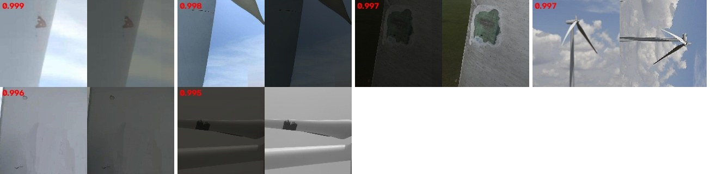
rfdetr 1.11.2 [18], fine-tuned end to end from its COCO
checkpoint. Batch 4 × accumulation 4 (effective 16), cosine schedule,
EMA checkpoint selected on validation. WTBD at 768 px for 100 epochs;
WTBlade at 640 px for 60 epochs.Runs used Kaggle Tesla T4 (fp16 mixed precision) and one A100 (bf16). All G27 seed-1 runs were on the A100 and seed-0 runs on Kaggle, so every pair of arms within a seed shares hardware.
Selection and reporting. Model selection uses validation only, and results are reported on test. Wind Surface has no separate test split, so we carve a seeded 10% of train for validation.
Evaluators. We use a 101-point COCO-style evaluator
[39]
(tools/bootstrap_ci.py). On identical predictions it agrees
with Ultralytics’ ap_per_class within 0.4 points on every
run and subset, so gaps to published figures are not an artefact of the
metric. Ultralytics’ val reports differ by 1–2.5 points
from cached predictions because of its rectangular-batch inference path.
Tables state which is used.
Intervals. Test images of one scene are correlated, so on group splits we resample whole scenes, paired across models (2,000 replicates unless noted). Official splits have no scene groups, so those intervals are image-level and therefore narrower than they should be. All intervals are 95%.
Three box scores. Standard AP is one-to-one matching at IoU ≥ 0.5. Tolerant AP lets one prediction match several same-class labels whose union it fits, and ignores fragments of an already found defect. Region AP is pixel-level precision and recall of the union of predicted boxes against the union of labels (4 px grid), so it does not depend on how a defect is split into boxes.
Pre-registration. From late October, hypotheses were written down with their pass bars before any run or computation, and committed. After a bad result we allow one scope check, on whether any part is usable, and then discard the hypothesis without rescue runs. Post hoc analyses are labelled as such.
Table 2 gives our scores on the official protocols. A generic detector with a standard recipe, and no blade-specific modules, reaches the level of the specialised models on two protocols, but not on Wind Surface.
| protocol | model | mAP50 / mAP50-95 [95% CI] |
|---|---|---|
| WTBD-official (test 161) | YOLO12-L (ours, Ultralytics) | 70.4 / 38.8 |
| BladeYOLO-v2 (ours, Ultralytics) | 84.0 / 49.3 | |
| RF-DETR-M 768, constant LR (G25) | 90.5 [86.3, 94.4] / 60.2 [55.6, 65.3] | |
| RF-DETR-M 768, cosine (G26) | 90.4 [85.8, 94.7] / 61.2 [56.5, 66.1] | |
| RF-DETR-L 704, cosine (G26) | 88.9 / 59.5 | |
| Wind Surface (val 714) | BladeYOLO [1] | 86.5 / 57.4 |
| our best leaky BladeYOLO-L | 78.2 / 46.9 | |
| RF-DETR-M 640, 60 ep, constant (G25) | 81.8 [78.0, 85.4] / 51.4 [48.3, 55.0] | |
| RF-DETR-M 640, 100 ep, cosine (G26) | 81.0 [77.1, 84.9] / 53.3 [50.0, 57.0] | |
| WTBlade-Defect (test 553) | BladeYOLO [1] | 85.8 / 74.6 |
| YOLOv12-L, as reported there | 83.3 / 71.9 | |
| RF-DETR-M 640, 25 ep, constant (G25) | 87.4 [84.4, 90.9] / 52.5 [49.6, 56.2] | |
| RF-DETR-M 640, 40 ep, cosine (G26) | 87.2 [84.0, 90.6] / 55.1 [52.0, 59.1] |
To our knowledge, the WTBD-official row is the best reported on that protocol; the dataset paper itself gives no detection baselines [9]. On Wind Surface, our copy has 3,570 images against the 3,790 reported by BladeYOLO, so the splits differ.
The mAP50-95 / mAP50 ratio. The ratio on WTBlade is 0.87 in the BladeYOLO paper and 0.86 for its YOLOv12-L baseline. RF-DETR’s ratio on WTBlade copies of training frames is 0.71, on all official test images 0.63, and on no-twin images 0.34. Across all our leak-free runs it spans 0.41–0.60. A ratio of 0.87 sits above every one of these. This is consistent with near-duplicate copies falling on both sides of a random split, but it is not proof, because that split is not available.
Using the per-image flags from the audit, we score the same official runs on the two subsets (Table 3, Fig. 6).
| protocol, run | all | leaked | no twin |
|---|---|---|---|
| WTBD-official, YOLO12-L | 69.0 / 37.7 | 69.7 / 38.5 | 70.0 / 35.2 |
| WTBD-official, BladeYOLO-v2 | 81.5 / 48.1 | 82.6 / 48.9 | 81.5 / 47.8 |
| WTBD-official, RF-DETR-M 768 cosine | 90.4 / 61.2 | 91.5 / 63.9 | 81.6 [69.1, 93.2] / 49.9 [40.4, 61.1] |
| Wind Surface, RF-DETR-M cosine | 81.0 / 53.3 | 83.3 / 55.1 | 59.2 [49.0, 68.1] / 37.6 [29.9, 45.4] |
| WTBlade-Defect, RF-DETR-M cosine | 87.2 / 55.1 | 90.8 / 59.4 | 50.4 [38.5, 64.0] / 17.2 [13.5, 23.4] |
| WTBlade-Defect, copies of a training frame (360) | 98.2 [97.7, 98.8] / 69.8 [67.8, 72.5] | ||
| WTBlade-Defect, same scene, not a copy (139) | 65.7 / 30.1 |
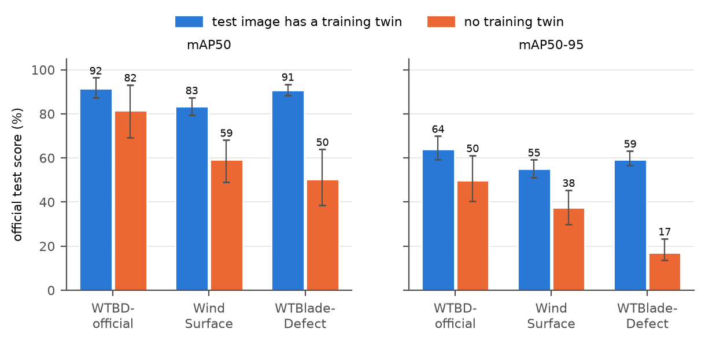
WTBlade-Defect’s official number is mostly its copies: 98.2 on copies of training frames and 50.4 with no same-scene training image. The independently built WTBlade-group benchmark agrees from a different direction: its RF-DETR-M runs score 16.1–17.3 mAP50-95 (Table 7) against 17.2 here. Their 38.5–41.8 mAP50 is inside this small subset’s interval of [38.5, 64.0].
WTBD’s no-twin subset is too small to read on its own: it holds a single box each of craze, thunderstrike and crack. Corrosion is the only class with a clear drop (AP50 97 to 54). The split comparison below is therefore the stronger evidence for WTBD.
Table 4 and Fig. 7 compare models trained on the same 1,065 WTBD images, official against scene-grouped.
| class | BladeYOLO-v2 official | BladeYOLO-v2 group | YOLO12-L official | YOLO12-L group | RF-DETR-M official | RF-DETR-M group |
|---|---|---|---|---|---|---|
| crack | 99.1 | 38.1 | 85.4 | 38.4 | 95.3 | 61 |
| craze | 90.9 | 7.6 | 62.2 | 6.5 | 95.3 | 9 |
| hide_craze | 80.0 | 56.9 | 63.9 | 52.6 | 80.3 | 71 |
| surface_injure | 81.6 | 74.7 | 71.1 | 62.9 | 91.0 | 83 |
| thunderstrike | 99.5 | 98.0 | 93.8 | 41.8 | 94.3 | 64 |
| corrosion | 52.7 | 53.8 | 46.0 | 60.8 | 86.0 | 46 |
| all | 84.0 / 49.3 | 54.8 / 24.5 | 70.4 / 38.8 | 43.8 / 20.6 | 90.4 / 61.2 | 55.3 / 33.2 |
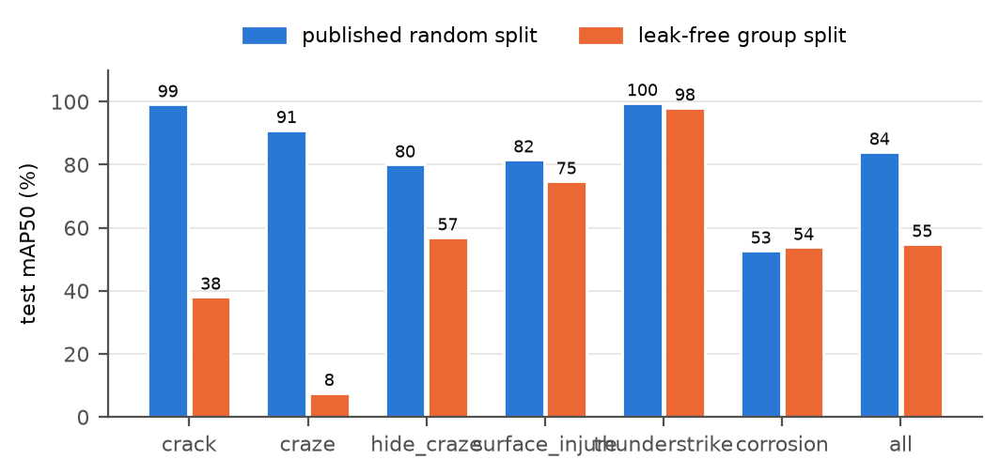
The inflation is model-independent: +29.2 mAP50 for BladeYOLO-v2, +26.6 for YOLO12-L and +35.1 for RF-DETR-M, with mAP50-95 multiplied by 2.0, 1.9 and 1.8. Fig. 10 (c) adds WTBlade: 87.2 / 55.1 officially and 38.5 / 16.2 on WTBlade-group. That second pair is not a pure split comparison, because WTBlade-group also keeps one frame per source and 60 rather than 40 epochs.
Between G25 and G26 we made one tuning step in the usual spirit, moving to a cosine schedule (and on two protocols, longer training) because the official numbers improved. Table 5 decomposes what that step bought (post hoc).
| protocol (change) | Δ all | Δ leaked | Δ no twin | interaction, P(>0) |
|---|---|---|---|---|
| WTBD-official (constant → cosine) | +1.0 [−1.2, +3.0] | +1.8 [−0.1, +4.0] | −8.1 [−13.4, +0.2] | +9.9 [+1.1, +15.8], 0.993 |
| Wind Surface (60 ep constant → 100 ep cosine) | +1.8 [+0.5, +3.1] | +2.3 [+0.9, +3.8] | −1.5 [−4.2, +1.4] | +3.8 [+0.7, +7.0], 0.988 |
| WTBlade-Defect (25 ep constant → 40 ep cosine) | +2.6 [+1.1, +3.9] | +3.5 [+2.0, +5.0]; copies +5.4 [+3.6, +7.0] | −4.0 [−7.2, +0.1] | +7.4 [+3.0, +11.1], 1.000 |
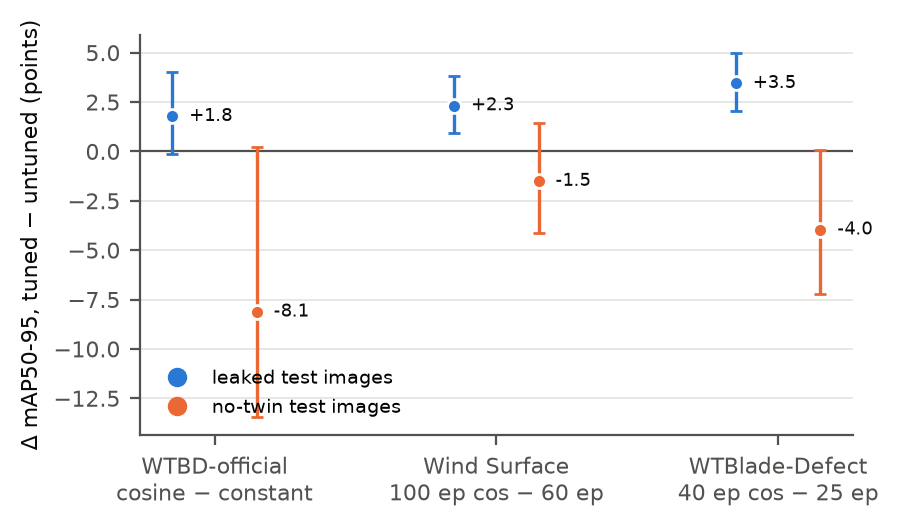
On every protocol the gain sits on leaked images, and the same change lowers the score on images without a twin. At mAP50 the change is −0.2 to −0.8 overall and −5.0 to −6.0 on no-twin images. The interaction excludes zero on all three. This applies to our own G26 numbers, which stay in Table 2 labelled as what they are. Two confounds remain: on Wind Surface and WTBlade-Defect the epoch count also changed (on WTBD only the schedule changed, with the same pattern), and this is one tuning step, not a study of tuning in general.
A second reading comes from the leaderboard itself. RF-DETR-M leads BladeYOLO-v2 on WTBD-official by +13.2 [+8.2, +17.4] mAP50-95 on all images, but by only +2.1 [−5.3, +19.8] on the 36 no-twin images, so that official lead is not established on unseen images.
An inspection system should promise a bound on missed defects. Conformal risk control [27] picks a confidence threshold so that the expected share of missed defects is at most α. A defect counts as flagged if at least 50% of its box is covered by predictions above the threshold. We calibrate on seen or unseen scenes and always deploy on unseen scenes (Table 6, Fig. 9).
| calibrated on | deployed on | realised miss rate | draws violating |
|---|---|---|---|
| seen scenes (group train), image units | unseen scenes | 31.5% | 100% |
| seen scenes, scene units | unseen scenes | 28.8% | 100% |
| unseen scenes (group val), image units | unseen scenes | 6.3% | 0% |
| unseen scenes, scene units | unseen scenes | 4.7% | 1% |
| official val (leaky) | official test, images with a twin | 12.6% | 91% |
| official val (leaky) | official test, no-twin images | 25.9% | 100% |
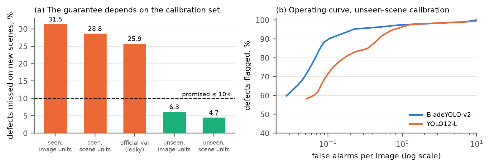
Models are overconfident on what they memorised, so a threshold calibrated on seen scenes is too high for new data. The practical rule is that calibration data must be split by scene, as test data must. The honest calibration is cheap: 0.2 instead of 0.1 false alarms per image. With only 60 calibration and 58 deployment scenes from one site, the val and test groups are not perfectly exchangeable: YOLO12-L still misses 12.3% with scene-unit calibration on unseen scenes, violated in 71% of draws.
Table 7, Fig. 10 and Fig. 11 give the benchmark, all with one evaluator.
| model | WTBD-group (161 images, 58 scenes) | WTBlade-group (332 frames, 177 scenes) |
|---|---|---|
| YOLO12-L | 40.0 / 18.5 | 32.2 / 13.3 |
| BladeYOLO-v2 without DINOv3 | 31.8 / 15.2 | not run |
| BladeYOLO-v2 | 56.1 / 24.4 (ViT-S) | 41.8 / 18.0 (ViT-B) |
| RF-DETR-M, A0, seeds 0 / 1 | 55.3 / 33.2, 54.8 / 32.2 | 38.5 / 16.2, 41.0 / 16.9 |
| RF-DETR-M + copy-paste, A1, seeds 0 / 1 | 51.5 / 30.7, 58.5 / 32.7 | 41.8 / 17.3, 39.3 / 16.5 |
| RF-DETR-M + copy-paste + in-domain SSL, A2 | 49.6 / 27.4 | 40.1 / 16.1 |
| RF-DETR-M + copy-paste + multi-dataset stage 1, A3 | 55.3 / 33.2 | 41.7 / 16.6 |
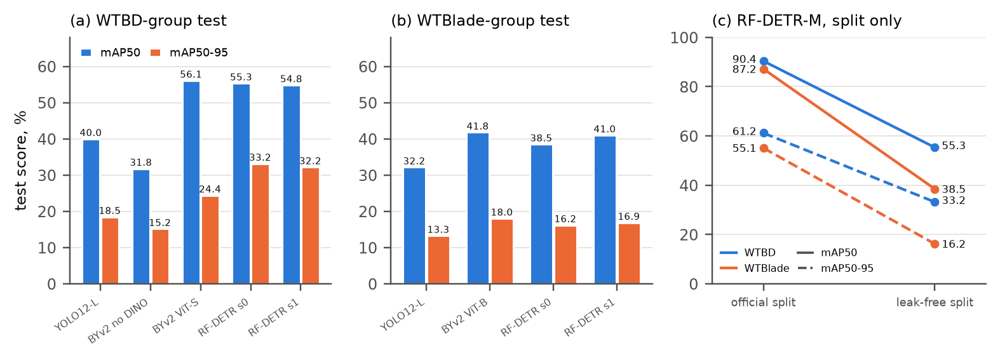
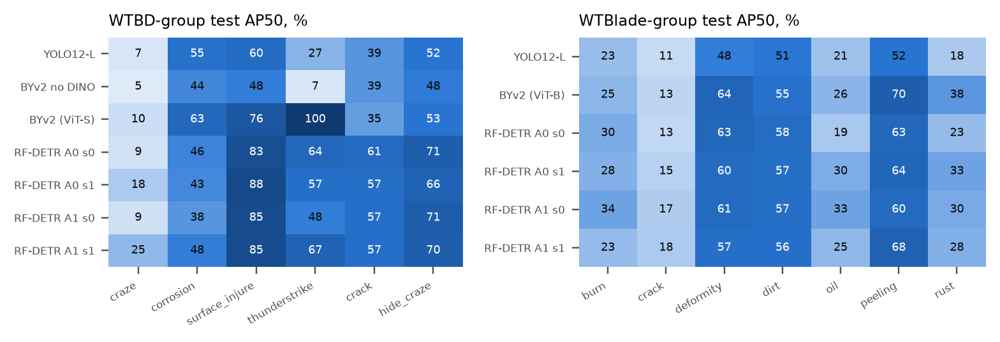
Four points stand out:
We removed only the frozen DINOv3 features from BladeYOLO-v2, keeping deformable refinement, selective scan and WIoU, at 25%, 50% and 100% of the labelled scenes (Table 8, Fig. 12).
| 25% | 50% | 100% | |
|---|---|---|---|
| BladeYOLO-v2 (frozen DINOv3 ViT-S) | 7.6 (3 seeds) | 17.5 | 24.2 (2 seeds) |
| without DINOv3 | 3.7 (2 seeds) | 8.8 | 15.2 |
| YOLO12-L (stock) | 4.1 | 9.9 | 18.5 |
| DINOv3 gain | +3.9 [+2.5, +10.1] | +8.8 [+4.0, +22.1] | +9.0 [+4.0, +20.5] |
| same, 4 well-represented classes | +4.4 [+2.3, +11.1] | +6.1 [+2.2, +17.9] | +4.9 [−1.8, +10.3] |
| YOLO12-L − without DINOv3 | +0.4 | +1.1 | +3.3 [−0.2, +13.1] |
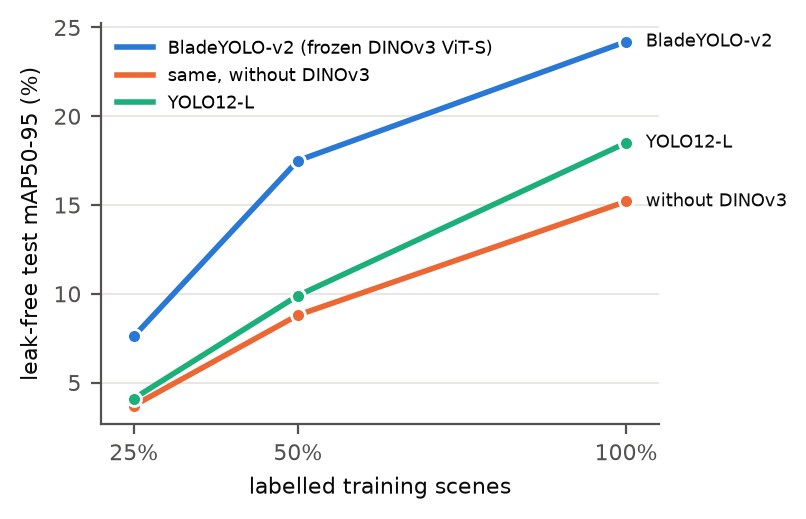
Without DINOv3, BladeYOLO-v2 equals or trails stock YOLO12-L at every data size. The advantage is therefore the features, not the architecture around them. We first read it as a low-data advantage; the 50% and 100% runs corrected that, since the absolute gain does not shrink with data. Only the relative gain does (2.0× to 1.6×). This claim concerns our components. BladeYOLO’s exact Style Injection, WTConv and Cross-Mamba modules were reimplemented only before our code audit (§ 10), so we make no claim about them.
Backbone size at 25% (Table 9). A larger frozen backbone helps up to ViT-B, and ViT-L adds nothing further.
| backbone | test mAP50 / mAP50-95 per seed | difference | Δ mAP50-95 [95% CI] |
|---|---|---|---|
| ViT-S/16, 3 seeds | 23.2 / 8.2, 22.4 / 8.7, 18.4 / 6.8 | ||
| ViT-B/16, 2 seeds | 25.2 / 10.2, 28.3 / 11.6 | ViT-B − ViT-S | +2.8 [+0.4, +9.6] |
| ViT-L/16, 2 seeds | 33.7 / 11.5, 30.1 / 10.9 | ViT-L − ViT-B | +0.3 [−4.0, +3.1] |
| without DINOv3, 2 seeds | 11.4 / 4.4, 8.1 / 3.1 | without − ViT-S | −3.9 [−10.1, −2.5] |
Fine-tuned against frozen foundation features, 25% labels, same subsets. RF-DETR-M beats BladeYOLO-v2 ViT-B by +7.3 [+2.3, +11.9] mAP50-95 (seed 0) and +8.3 [+4.5, +15.0] (seed 1), positive on 4 of 4 subsets at each seed. As a controlled comparison, freezing RF-DETR’s encoder lowers test mAP50-95 from 18.9 to 12.3 on WTBD and from 13.2 to 8.7 on WTBlade. Input resolution (G24) adds +1.0 from 576 to 768 on WTBD (P 0.958) and −0.1 on WTBlade, whose frames are natively 640 px.
Fig. 15 shows validation curves from every recent run. RF-DETR peaks early and then drifts down, which is why EMA checkpoint selection matters. In contrast, YOLO12-L on WTBlade-group rises almost linearly until about epoch 43 of 50. Fig. 13 shows training and validation batches, and Fig. 14 confusion matrices and a PR curve. In the matrices, columns are true classes. The bottom row shows missed labels (crack 18% on WTBD-group and 27% on WTBlade-group for YOLO12-L), the right column shows where false positives go, and the strongest confusions involve rare classes (YOLO12-L calls 54% of thunderstrike labels craze on WTBD-group test).
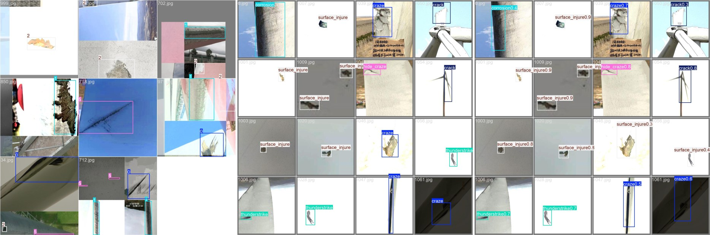
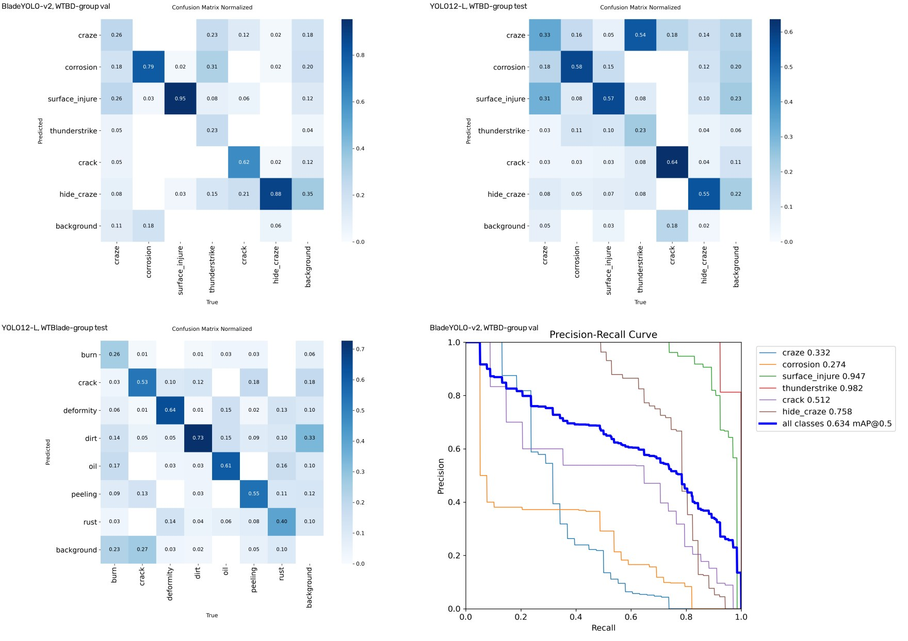
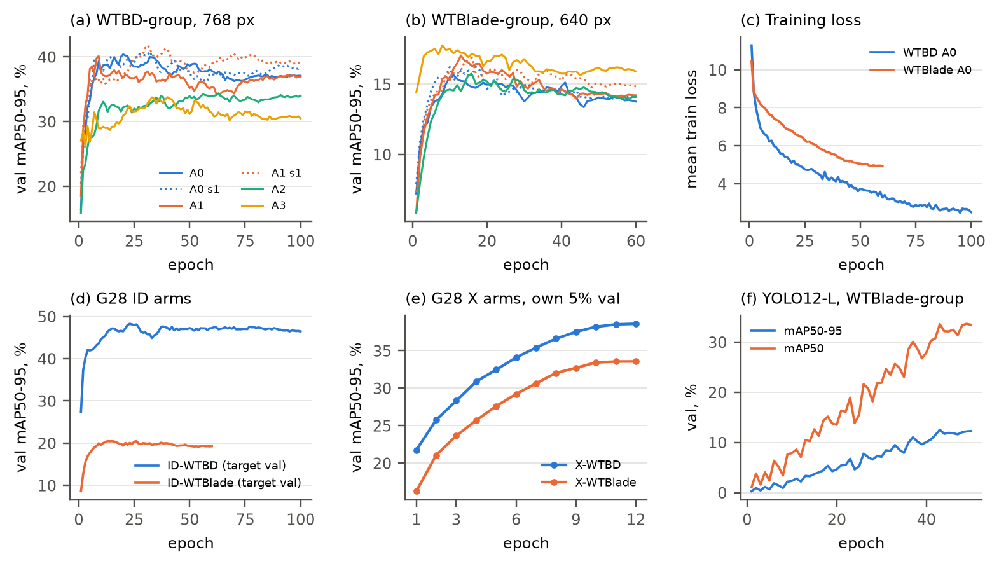
WTBD’s augmented copies were annotated independently, so aligned copies of an image give accidental repeated labels. For every verified pair of the same surface we project each label through the transform (flip-aware ORB + RANSAC similarity, ≥ 25 inliers, at least 8 inliers inside the box) and classify it as agree (same class, IoU ≥ 0.5), class conflict, split, loose or missing. Fig. 16 shows examples and Table 10 gives the rates.
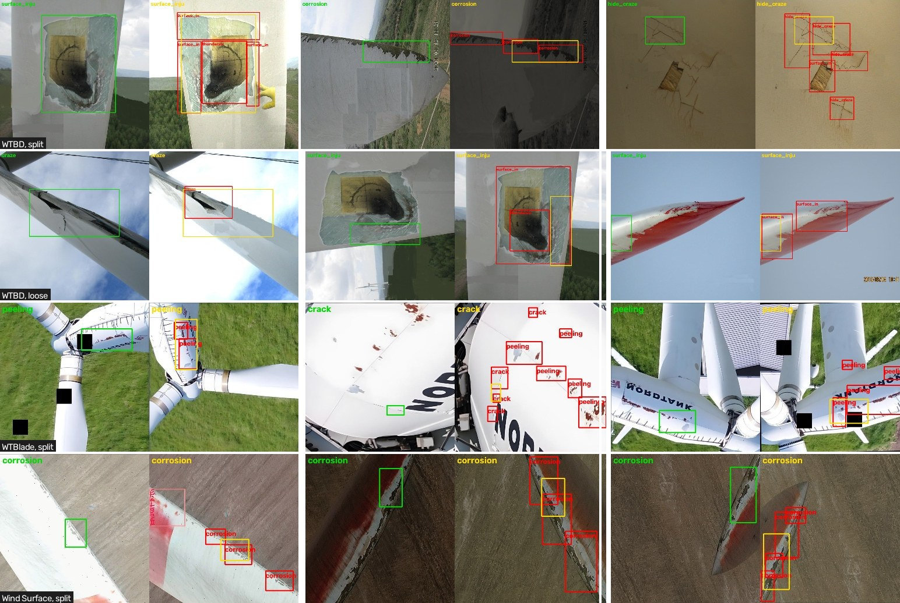
| dataset | labels | agree | split | loose | missing | class conflicts | rotated copies | other views |
|---|---|---|---|---|---|---|---|---|
| WTBD | 2,965 | 87.3% | 4.6% | 6.7% | 1.5% | 0 | 77.9% | 64.1% |
| WTBlade-Defect | 42,812 | 86.0% | 2.5% | 8.2% | 3.1% | 91 (0.2%) | 80.7% | 59.8% |
| Wind Surface | 10,261 | 83.8% | 9.2% | 5.9% | 1.1% | 0 | (18 labels) | 44.2% |
So 13–16% of labels disagree with an exactly aligned copy, in all three datasets, including a double-annotated one (κ = 0.897 reported by its authors [9]). Almost none of it is class. The amorphous classes are the least consistent (Fig. 17). Counts are per label occurrence and concentrate in a few heavily duplicated scenes. On WTBlade the “missing” rate is mostly a matching artefact of rotating rotors in video (1.1% without dirt). Most of its 91 class conflicts are pasted synthetic patches labelled peeling in one copy and crack in another.
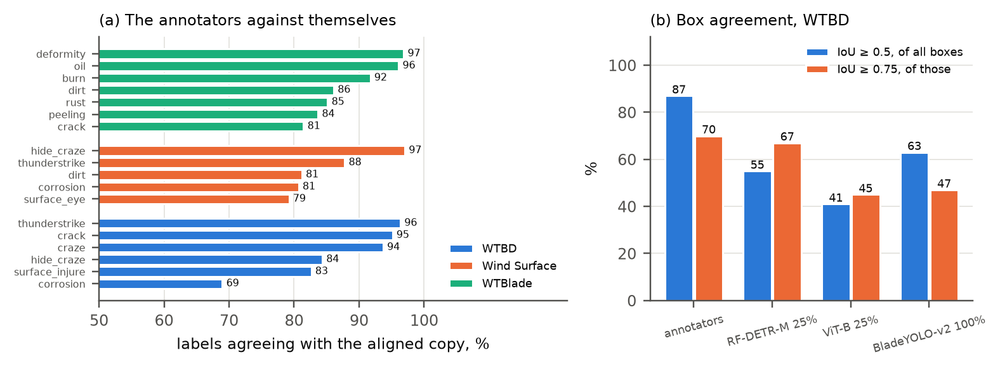
On WTBD-group, tolerant AP50 exceeds standard AP50 by +11.9 for BladeYOLO-v2 (56.1 → 68.0) and +12.4 for YOLO12-L (40.0 → 52.4). Most striking is craze, from 9.9 to 66.1. All 15 craze test images are rotated, flipped or recoloured copies of one long leading-edge split, annotated as 2–3 segment boxes (Fig. 18). The same effect holds for RF-DETR scored with classes merged: AP50 rises from 66.1 to 79.7 on WTBD-group and from 50.1 to 61.2 on WTBlade-group (Table 15).
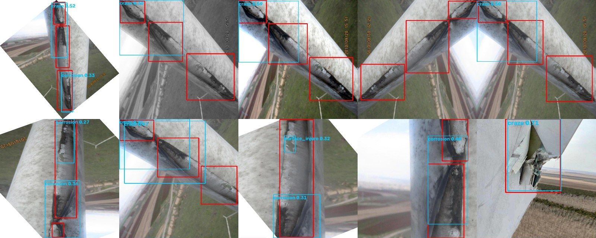
Table 11 gives the per-class view for BladeYOLO-v2.
| standard AP50 | tolerant AP50 | region AP | |
|---|---|---|---|
| BladeYOLO-v2, WTBD-group | 56.1 [48.3, 79.1] | 68.0 [60.4, 83.1] | 60.3 [55.2, 74.3] |
| YOLO12-L, WTBD-group | 40.0 [33.9, 67.8] | 52.4 [46.5, 74.0] | 44.1 [40.2, 59.2] |
| difference | +16.1 [+2.3, +28.4] | +15.6 [+0.1, +23.7] | +16.2 [+7.7, +23.6] |
| BladeYOLO-v2, WTBD official | 81.5 | 88.9 | 77.1 |
| YOLO12-L, WTBD official | 69.0 | 80.0 | 66.6 |
| craze | 9.9 | 66.1 | 42.7 |
| corrosion | 62.6 | 67.6 | 68.4 |
| surface_injure | 75.9 | 81.6 | 68.9 |
| thunderstrike | 100.0 | 100.0 | 68.2 |
| crack | 35.2 | 35.6 | 49.1 |
| hide_craze | 53.0 | 56.8 | 64.5 |
Two limits apply. We hypothesised that part of the leakage inflation is memorised box splitting, and tested it: the tolerant gain is not smaller on test images with a training twin, so the hypothesis is not supported. And training a detector to tolerate splitting does not help overall: blanket split-tolerant training is not an improvement (tolerant AP50 +1.5 [−11.1, +6.4]), and class-selective tolerance raises corrosion by +9.3 [−0.3, +24.6] while the mean moves by −0.4. So the ambiguity limits what can be measured more than what can be trained away.
Annotators as a ceiling. Corrosion copies agree on only 69% of labels and models score near that (BladeYOLO-v2 AP50 54–63), so more corrosion “improvement” is largely unmeasurable with these labels. Crack copies agree on 95% while the YOLO family scores 35–39, so crack is a genuine model weakness there.
At a fixed budget of 25% of scenes, which scenes are labelled matters more than any model effect we measured (Fig. 19). Across 8 random draws, with the same model, recipe and seed, ViT-B test mAP50-95 spans 9.0–19.6 (×2.2), and without DINOv3 it spans 2.6–7.2. The DINOv3 gain holds on 8 of 8 draws (+7.1 [+5.1, +12.6]), and draw quality carries over between models (Spearman ρ 0.71). Yet no label-free subset property we tested predicts it (H7, G16, H20). Label-free scene selection by patch coverage beats random by +5.2 [+1.9, +10.5] but does not separate from FreeSel [30] (+2.1 [−1.2, +9.1], P 0.917, validation opposite).
Table 12 gives the selection runs at the same 25% budget. Selecting by class balance does worst of the five arms, which suggests that which scenes are labelled matters more than matching class counts.
| arm (runs) | test mAP50 | test mAP50-95 | val mAP50-95 | rank among 8 random (test / val) |
|---|---|---|---|---|
| patch coverage, label-free (4) | 40.6 | 17.7 | 23.6 | 2 of 9 / 3 of 9 |
| FreeSel-224 (2) | 42.9 | 15.6 | 27.1 | 2 of 9 / 1 of 9 |
| FreeSel-640 (2) | 34.4 | 14.5 | 26.6 | 2 of 9 / 2 of 9 |
| random (8) | 31.3 | 12.5 | 21.6 | |
| class-matched, uses labels (2) | 25.3 | 10.4 | 19.7 | 7 of 9 / 7 of 9 |
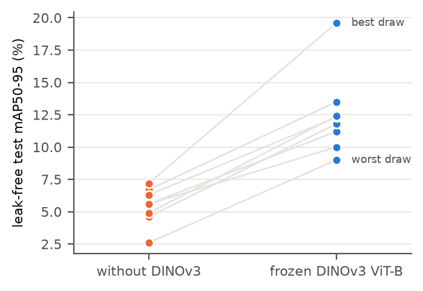
Scarce labels fail differently by detector family (Fig. 20, in the style of TIDE [40]). For each test box we ask whether a same-class box at IoU ≥ 0.5 is among the outputs and how it is scored.
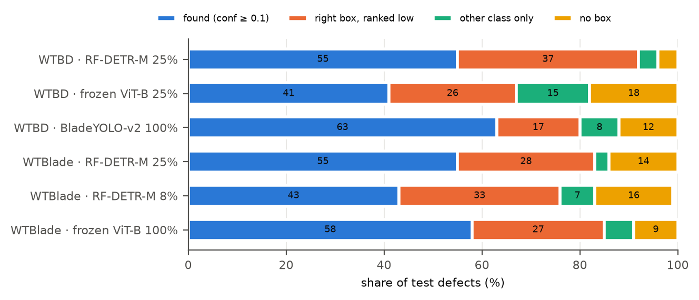
Table 13 gives the numbers and Table 14 the extent comparison.
| dataset | detector | hit | ranked low | other class | no box | candidate recall | in top 50 |
|---|---|---|---|---|---|---|---|
| WTBD | RF-DETR-M 25% (4 subsets) | 0.55 | 0.37 | 0.04 | 0.04 | 0.92 | 0.81 |
| WTBD | ViT-B 25% (4 subsets) | 0.41 | 0.26 | 0.15 | 0.18 | 0.67 | 0.66 |
| WTBD | BladeYOLO-v2 100% (2 seeds) | 0.63 | 0.17 | 0.08 | 0.12 | 0.80 | 0.80 |
| WTBlade | RF-DETR-M 25% (4 subsets) | 0.55 | 0.28 | 0.03 | 0.14 | 0.83 | 0.72 |
| WTBlade | RF-DETR-M 8% (4 subsets) | 0.43 | 0.33 | 0.07 | 0.16 | 0.77 | 0.62 |
| WTBlade | ViT-B 100% | 0.58 | 0.27 | 0.06 | 0.09 | 0.85 | 0.81 |
| source | boxes | IoU ≥ 0.5 | of those, IoU ≥ 0.75 | median IoU of those | IoU ≥ 0.75 |
|---|---|---|---|---|---|
| annotators, all copies | 2,965 | 0.87 | 0.70 | 0.83 | 0.61 |
| annotators, test copies | 392 | 0.91 | 0.75 | 0.84 | 0.68 |
| RF-DETR-M 25% (4 subsets) | 940 | 0.55 | 0.67 | 0.83 | 0.37 |
| ViT-B 25% (4 subsets) | 940 | 0.41 | 0.45 | 0.73 | 0.19 |
| BladeYOLO-v2 100% | 235 | 0.63 | 0.47 | 0.74 | 0.29 |
If label count were the bottleneck, pooling every other blade dataset should help. G28 tests this directly. It was pre-registered before any pool was built or run started.
For each target T, two class-agnostic RF-DETR-M arms (640 px, cosine, seed 0) are scored on T’s test set:
Every image of T is an evaluation key for the twin rule: same file, DINOv2 ≥ 0.90, ORB ≥ 25 inliers, pixel correlation ≥ 0.97 over 8 orientations, and the closure of all of these. GAN images and box-less images are dropped. The rule deliberately sits below the audit’s twin thresholds (0.93 and 0.99): earlier versions of this rule, on the G27 pool, kept 830 pixel twins and then neighbouring video frames, and each failure was logged and fixed before any training. Fig. 21 shows the result: X-WTBD has 26,065 training images (55,845 boxes across its train and held-out images) and X-WTBlade 14,405 (27,844). Fig. 22 shows the closest pairs an independent audit could find; the highest pixel correlation and cosine to any target image are 0.964 / 0.827 and 0.970 / 0.900.
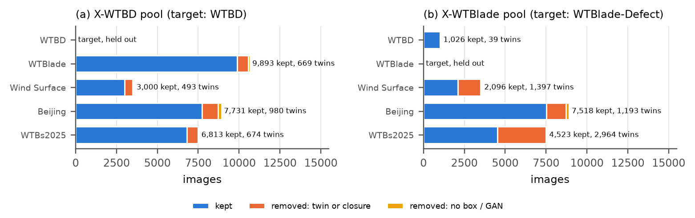
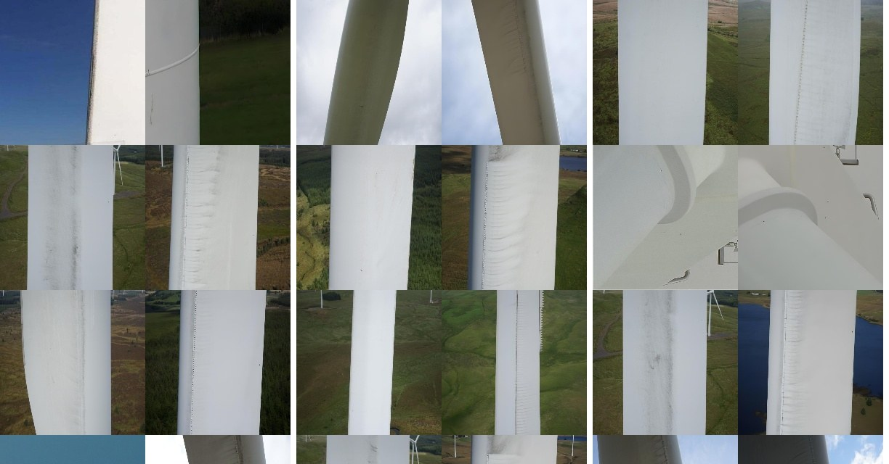
We define the gaps in standard AP50 and in region AP, and the convention share , the part of the gap that is about how boxes are drawn. The direction counted as alive only if, on both targets, X reached at least 0.80 × ID in region AP and the convention share was at least 0.5. Both bars were judgment calls fixed before any number existed.
| target | arm | train images | AP50 | AP50-95 | tolerant AP50 | region AP | AR50 |
|---|---|---|---|---|---|---|---|
| WTBD-group | ID | 745 | 72.9 [57.6, 86.3] | 41.9 | 84.6 | 68.9 [61.3, 75.4] | 98.7 |
| X | 26,065 | 17.7 [11.9, 28.4] | 6.0 | 24.2 | 43.6 [37.4, 52.3] | 79.6 | |
| ref | 745 | 66.1 | 40.5 | 79.7 | 65.9 | 97.9 | |
| trivial | 0.0 | 14.0 | |||||
| WTBlade-group | ID | 2,136 | 51.7 [48.0, 58.8] | 21.5 | 65.1 | 68.7 [62.6, 75.2] | 90.5 |
| X | 14,405 | 2.4 [0.8, 3.5] | 0.5 | 3.2 | 37.6 [32.5, 45.1] | 38.2 | |
| ref | 2,136 | 50.1 | 21.3 | 61.2 | 68.0 | 92.2 | |
| trivial | 1.0 | 24.2 |
| target | X / ID region AP | convention share | [95% CI] | [95% CI] | verdict |
|---|---|---|---|---|---|
| WTBD-group | 0.63 | 0.54 | +55.2 [+41.7, +66.4] | +25.3 [+14.4, +33.9] | dead |
| WTBlade-group | 0.55 | 0.37 | +49.3 [+45.0, +57.2] | +31.0 [+26.8, +34.6] | dead |
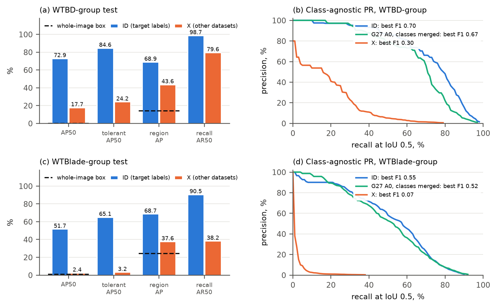
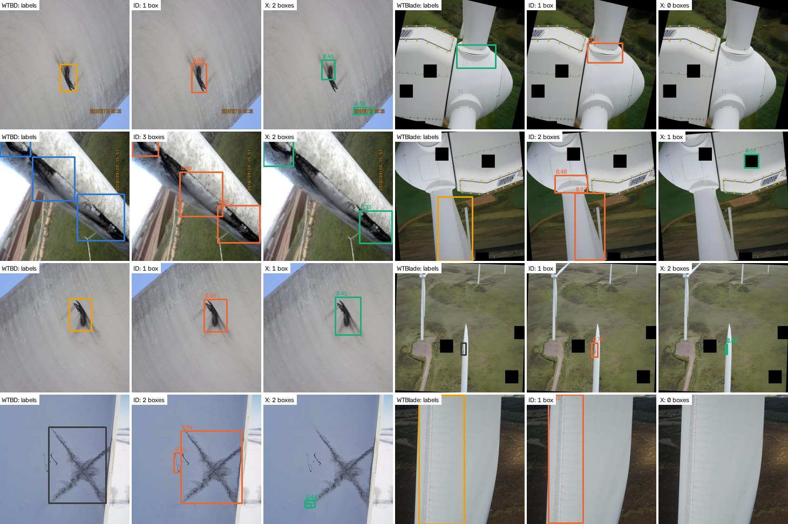
The direction fails on both targets. Table 15, Table 16 and Fig. 23 give the numbers, and Fig. 24 shows examples. With 35× more images from other sources, X still loses to 745 target images by 55 AP50 points on WTBD-group. The convention explains about half of the gap there and about a third on WTBlade-group. The remainder is a real failure to find the defect. Without the residual pixel-twin images of Fig. 5, the decision stays the same (ratio 0.64 and 0.56, share 0.55 and 0.39; ID AP50 71.9 and X 17.1 on WTBD-group).
The model did train. X-WTBD reached mAP50 72.2 on its own held-out images at its final epoch, and its region AP is above a trivial detector on both targets (43.6 against 14.0, 37.6 against 24.2). So it does carry information about where defects are. But it is not usable as a detector on an unseen dataset: X-WTBlade’s AP50 of 2.4 is barely above boxing the whole image (1.0).
Why recall and AP disagree on WTBD. X finds 79.6% of WTBD labels at IoU 0.5 while scoring 17.7 AP50. Fig. 23 (b) shows why: true boxes rank among many false ones. At recall 10%, precision is 54% against 100% for ID; at recall 30% it is 23% against 95%. At its best F1 (0.30), X keeps about one box per image. On WTBlade-group, X’s precision at recall 10% is only 3%, against 90% for ID. AR50 is generous because it counts every output, up to 300 per image, and some false positives are genuine damage of kinds T does not label, as noted in the pre-registration, so this test is conservative for X.
Earlier evidence agrees. Models trained on one benchmark transfer poorly to the other (Table 17), and an open-vocabulary foundation detector finds almost nothing without training. Pooling many sources raises the WTBD number from 5.2 to 17.7, but these are different models and scoring scopes, not a paired comparison, and on WTBlade-group pooling does not help (2.2–4.0 against 2.4).
| setting | result |
|---|---|
| WTBlade model on WTBD-group test | AP50 5.2 (in-domain 56.3, 58.0); difference −52.5 [−69.4, −32.9] |
| WTBD models on WTBlade-group test | AP50 4.0, 2.2 (in-domain 47.5); difference −43.9 [−49.6, −34.6] |
| Mapped classes across datasets | crack 0.0 both ways; thunderstrike / burn at most 7.3 |
| OWLv2 [41], text queries, no training, WTBD-group | mAP50 3.3 (class-agnostic 5.7); trained on 25%: 25.0–25.7 |
| OWLv2, few-shot prototypes from 25% labels | mAP50 0.6 (class-agnostic 0.5) |
The leak-free gap motivated many attempts. Reporting them matters, since a reader should know which common ideas have been tried here and how they fared.
Diagnostics said that RF-DETR’s extent is at the annotator ceiling, that candidate recall is high and that rare-class scoring is the loss, with post hoc rescoring closed. So G27 changed what the model learns from, with three additions on one pre-registered path:
A-1 selected the recipe R on validation, seed 0: the best mean among arms beating A0 on both datasets. A-2 is the primary test claim on seeds 0 and 1: R − A0 > 0 on each dataset, with pooled P(> 0) ≥ 0.95.
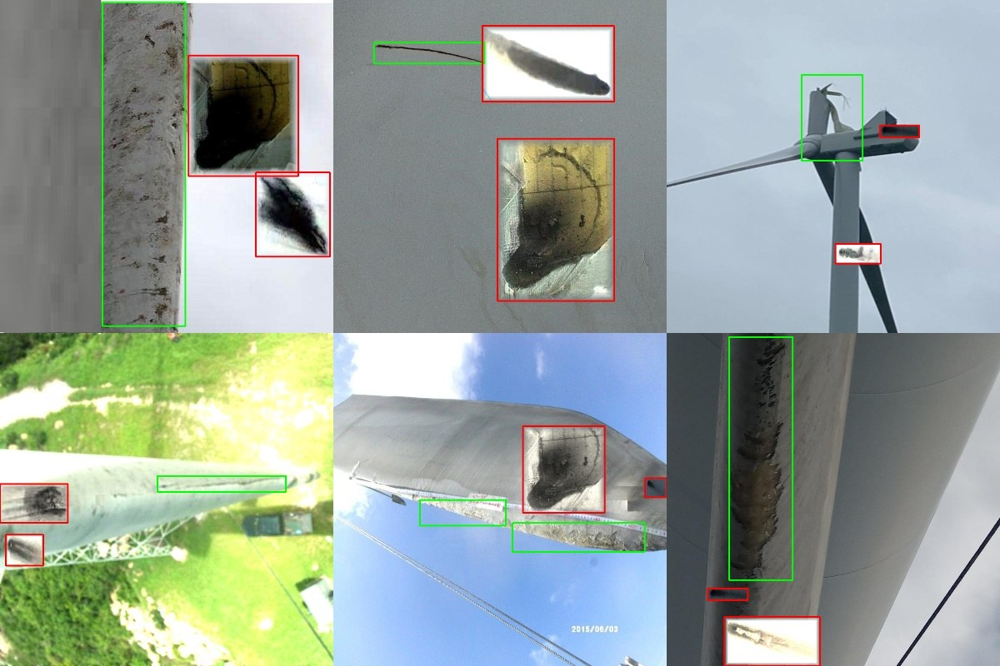
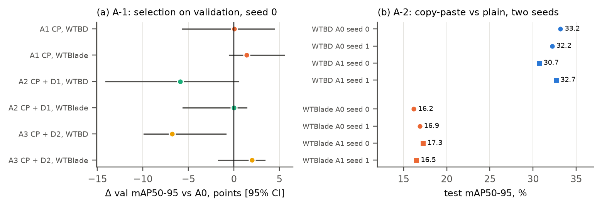
| R − A0 | 95% CI | P(> 0) | |
|---|---|---|---|
| WTBD-group | −0.99 | [−8.6, +1.2] | 0.193 |
| WTBlade-group | +0.35 | [−0.5, +1.6] | 0.812 |
| mean over datasets | −0.32 | [−4.1, +0.9] | 0.290 |
As pre-registered, we also score without the residual pixel-twin images: R − A0 is −1.01 on WTBD-group and +0.40 on WTBlade-group, so the conclusion is unchanged.
R = A1 was chosen by +0.04 points on WTBD-group validation, smaller than A0’s own seed-to-seed difference on validation. D1 and D2 were rejected on A-1 (−5.9 and −6.8 points against A1 on WTBD val), and a post hoc check found D1 halved the encoder’s last-stage effective rank (257 to 135), partial dimensional collapse. A seed swing of up to 2 points on these test sets (A1 on WTBD: 30.7, 32.7) sets the smallest effect that can be claimed.
Table 19 gives the validation scores that made the selection, with the test scores beside them.
| arm | WTBD-group val, seed 0 | WTBD-group test, seeds 0 / 1 | WTBlade-group val, seed 0 | WTBlade-group test, seeds 0 / 1 |
|---|---|---|---|---|
| A0 plain | 40.11 | 33.2 / 32.2 | 15.68 | 16.2 / 16.9 |
| A1 + CP | 40.15 | 30.7 / 32.7 | 17.10 | 17.3 / 16.5 |
| A2 + CP + D1 | 34.2 | 27.4 / – | 15.6 | 16.1 / – |
| A3 + CP + D2 | 33.4 | 33.2 / – | 17.7 | 16.6 / – |
Label budgets suggested semi-supervision, and it took three rounds to rule out (Table 20). Seed noise alone is ±2.6 mAP50 at 25%, as wide as every effect measured. The class-balanced variant is significantly worse, partly through a confirmation-bias runaway: one seed produced up to about 2,300 pseudo-boxes per epoch from 24 images. Measured against hidden labels, even a good teacher’s pseudo-labels are 66% correct at threshold 0.5 and 40% at 0.25.
| arm | test mAP50 / mAP50-95 | val best mAP50 / mAP50-95 | pseudo-labels |
|---|---|---|---|
| supervised | 23.2 / 8.2 | 44.4 / 22.6 | – |
| synthetic views, unlabelled pool | 22.4 / 7.8 | 44.8 / 22.0 | 2,748 |
| real views, unlabelled pool | 19.2 / 7.7 | 38.2 / 18.4 | 961 |
| in-domain (the rest of train, labels hidden) | 20.9 / 8.0 | 45.7 / 22.7 | 1,294 |
| supervised, 3 seeds | 21.3 ± 2.6 / 7.9 ± 1.0 | – | |
| class-balanced in-domain, 3 seeds | 16.3 ± 2.0 / 6.6 ± 0.6 | 5,957, 28,742, 4,372 |
Table 21 lists the method hypotheses we ran or formally gated, with their results. Fig. 27 plots those with a test effect in points. Some effects are real but narrow (copy-paste on rare classes in a low-label setting), and few survive a second dataset or a replication.
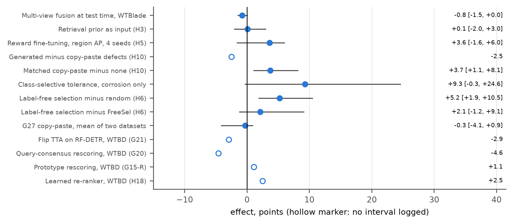
| test | idea | result | verdict |
|---|---|---|---|
| Phases 22–24 | Teacher–student with synthetic or real views, in-domain, class-balanced [44]; 3 seeds | balanced in-domain 6.6 vs supervised 7.9; mAP50 −4.2 [−12.1, −0.3]; confirmation-bias runaway on one seed | fails |
| Phase 24 | SAM 2.1 box refinement [43] | +0.3 to +0.5 at 25%, −0.2 at 100% | fails |
| Phases 18, 26 | Split-tolerant training; class-selective version, 2 seeds | blanket not an improvement; corrosion +9.3 [−0.3, +24.6], mean −0.4 | targeted only |
| H1 | Multi-view fusion at test time | not testable on WTBD (26 images with a second view); WTBlade-group −0.8 [−1.5, 0.0] | fails |
| H2 | Normal-blade anomaly prior | most anomalous patches not on defects; box recall below chance | fails |
| H3 | Retrieval prior as a detector input | +0.1 [−2.0, +3.0] | fails |
| H4 | Test-time adaptation across real views | gate failed: real views do not make better detections | not run |
| H5 | Reward fine-tuning, granularity-invariant reward; 4 seeds + WTBlade | region AP +3.6 [−1.6, +6.0], P 0.896; WTBlade −0.6 | fails on replication |
| H6 | Label-free scene selection by patch coverage | +5.2 [+1.9, +10.5] over random; +2.1 [−1.2, +9.1] over FreeSel | no gain over prior art |
| H7 | Label-free property predicting subset quality | no property survives correction | fails |
| H8, H9 (G8, G9) | Feature upsampling; high-frequency cues | −5.9; −0.1 (mean AP) | fail |
| H10 | Generated rare-class defects vs matched copy-paste | synth − paste −2.5; paste − none +3.7 [+1.1, +8.1] | generation fails; copy-paste helps here |
| H12 | DINOv3 reduces subset luck | it does not; draw quality carries over (ρ 0.71) | fails |
| G15, G15-R | Prototype rescoring | WTBD +1.1; WTBlade −0.7 | fails bar; prior art |
| G16, G16-R | Instance-level proximity law; explains subset luck? | law holds at instance level; does not explain subset luck; on RF-DETR it holds for confidence, not for detection | partial |
| H16b | Deployment-targeted scene selection | gate failed | not run |
| G17 | Clicks as pseudo-boxes (bar: 60% at IoU ≥ 0.5) | 42.0% | fails |
| H18, -R, -W | Learned coverage-aware re-ranker on RF-DETR | WTBD +2.5, replicated on new models; WTBlade +0.2 | WTBD only |
| H19-W | Rescoring at the low-count boundary, WTBlade 8% | −0.2 [−1.3, +0.7], P 0.286 | fails |
| G20 | Query-consensus rescoring | −4.6 WTBD; −2.1 WTBlade | fails |
| G21 | Flip agreement; plain flip TTA on RF-DETR | −2.9 WTBD; −0.6 WTBlade | fails; TTA hurts this DETR |
| G22, -O | Fine-tuning moves proximity from recall to ranking | controlled confirmation on WTBD; not on WTBlade; holds only for generic-feature proximity | does not replicate |
| H20 | Subset luck as annotation-convention match | no relation | fails |
| G24 | Input resolution 768 vs 576 | WTBD +1.0 (P 0.958); WTBlade −0.1 | dataset-specific |
| V1 | RF-DETR replaces the frozen-feature detector at 25% | +7.3 [+2.3, +11.9]; +8.3 [+4.5, +15.0] | passes |
| Box extent; crop re-classifier | Better box refinement; re-classifying RF-DETR candidates | prior-art and ceiling checks show little room | discarded before any run |
| G25, G26 | Official-protocol benchmark; tuned recipe | Table 2, Table 5 | reported |
| G27 | CP, D1, D2 recipe | A-2 −0.32, P 0.290 | fails |
| G28 | Leave-one-dataset-out | dead on both targets | fails |
We report this because the same traps face anyone working on these datasets. Fig. 28 gives the sequence, and Table 22 the original runs.
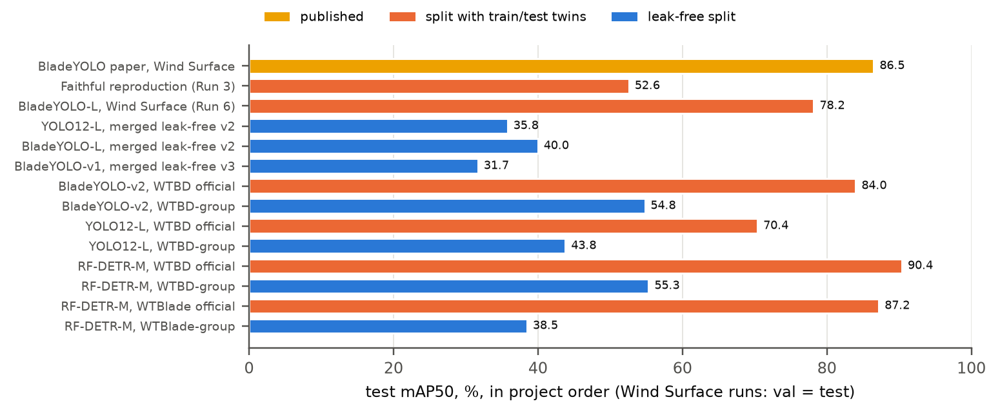
| run | architecture | epochs | mAP50 | mAP50-95 | outcome |
|---|---|---|---|---|---|
| 1–2 | paper-faithful: DINOv3 + Style Injection + WTConv + Cross-Mamba | crash, ~200 | bf16, unfreezing and DDP failures; NaN from FFT gradients | ||
| 3 | paper-faithful, FFT detached, SGD | ~283 | ~52.6 | ~28 | stagnated; closest reproduction |
| 4 | BladeYOLO-S (8 M parameters) | 400 | 64.3 | 37.3 | apparent ceiling at about 64 |
| 6 | BladeYOLO-L (57.2 M), AdamW | 400 | 78.2 | 46.9 | looked like a breakthrough |
| 7 | Run 6 + “Cross-Scale Vision Mamba” + WIoU v3 | 400 | 77.0 | 47.8 | “+0.9 from WIoU” |
The gap of 33.9 / 29.4 points between Run 3 and the published 86.5 / 57.4 is far beyond run-to-run variance. These runs used a weakened feature extractor (below) and the leaky split, so they support “not reproducible from the published information”, and not “the published modules do not work”. The paper reports 3,790 images while the public copy has 3,570, and gives no split seed, image list or code.
Then we audited our own code. Run 7 was not the model we described:
Then we found the leak. Removing it took the numbers from about 78 to about 36–40 on a merged, deduplicated dataset (v2, 2,606 unique images from 11,681), and a larger taxonomy-mapped v3 (5,777 images) scored only 26–32. An exhaustive label review of 763 candidates was worth only +3 mAP50 points. v3’s limit was structural: its classes rest on few independent scenes, and one had a single training group. Only then did the audit lead us to WTBD alone, with its native classes.
Table 23 in the appendix lists all conclusions we later corrected. Several were our own favourite explanations.
Code and records. All code, tests, split files,
per-image flags and the full research log (research_log.md)
are at https://github.com/bhavya-goel-11/BladeYOLO. To
regenerate this paper’s numbers and figures, run
tools/official_leak_eval.py,
tools/g27_score.py, tools/g28_score.py,
tools/paper_evidence.py,
tools/paper_figures.py,
tools/paper_figures2.py and
tools/build_paper.py. The training queue is
tools/sessions.sh.
Data. The datasets, leak-free splits and pools are
assembled as blade-defect-benchmark, with per-folder
licences in its LICENSES.md. WTBD is CC BY 4.0.
WTBlade-Defect contains DTU NordTank images [5] under CC BY-NC, despite its Roboflow
page, and derived folders inherit this, so they are for non-commercial
research only. The Wind Surface licence is unclear from its source.
Images in our figures are shown for scientific comment; sources are
cited above.
Foundation models. We acknowledge DINOv3 [21], used under the DINOv3 License, and DINOv2 [19] through RF-DETR [18]. Trained checkpoints containing DINOv3 weights must ship with that licence.
| earlier conclusion | status | why |
|---|---|---|
| Runs 6–7 reach ~78 / ~47 on Wind Surface | invalid | 75% of validation had train twins (first count) |
| WIoU v3 gave +0.9 mAP50-95 | invalid | never active; Run 7 trained with CIoU |
| Mamba added global context | invalid | the block did not scan |
| SGD → AdamW was the breakthrough | confounded | changed together with an 8 M → 57 M scale-up |
| The remaining gap is locality bias | superseded | the gap was leakage and data structure |
| v3 is better because it is larger | superseded | scenes matter, not files (Wind Surface 81; WTBD 550) |
| Mislabelling explains poor v3 scores | rejected | the review was worth only +3 mAP50 points |
| BladeYOLO-v2’s win shows the architecture generalises | qualified | it rests mainly on thunderstrike (3 test scenes) |
| The advantage comes from the architecture | rejected | the frozen DINOv3 features carry it all |
| Honest calibration costs 2.4 vs 1.0 false alarms per image | corrected | that column counted all predictions; real false alarms 0.2 vs 0.1 |
| WTBD copies agree on 86.0% | refined | rotated copies inflate “loose”; axis-aligned 87.3% |
| Part of the inflation is memorised box splitting | not supported | tolerant gain is not smaller on images with a twin |
| At 25%, most lost defects are found but boxed differently | refined | near-misses (34–36%) and misses (19–27%) are of similar size |
| Split tolerance helps corrosion | replicated, not significant | +9.3 [−0.3, +24.6]; aggregate unchanged |
| The DINOv3 advantage is a low-data advantage | corrected | absolute gain does not shrink with data |
| The gain grows with frozen backbone size | partly supported | ViT-B beats ViT-S; ViT-L does not beat ViT-B |
| Teacher–student gives a small consistent gain | qualified | seed noise was as large; balanced variant significantly worse |
| Leak-free mAP50-95 / mAP50 ratios are 0.42–0.47 | corrected | full-label RF-DETR on WTBD-group reaches 0.60 |
| problem | root cause | fix |
|---|---|---|
| WIoU never active | patched the wrong namespace | patch the loss namespace |
| NaN in selective scan (epoch 9) | fp16 overflow before LayerNorm | fp32 LayerNorm |
| NaN at epoch 4 | poisoned WIoU running mean; aggressive warm-up | finite-only mean; lr 0.001, bias warm-up 0 |
| NaN at epoch 17 | fp16 overflow from a conv into BN | fp32 blocks for refinement |
| NaN at epoch 99, validation at 0 | NaN batch poisons BN statistics and EMA | per-batch BN repair and step skip, reported |
| NaN late in training (epochs 99–149) | YOLOv12 area attention forms scores in fp16 (~4e5, above the fp16 maximum) | scores and softmax in fp32 |
| Test metrics silently missing | deform_conv2d segfault on NaN offsets from the FLOPs
probe’s uninitialised image |
finite, clamped offsets; test in a fresh process |
| Silent resume from an old checkpoint | training script reused any last.pt |
explicit --resume |
| RF-DETR learning rate never decayed | default step at epoch 100 never fires | explicit cosine schedule (G26) |
| Scorer read a stale result after a time-out | an earlier output file had the same name | rerun with no limit; check file freshness |
Names follow the research log: Hn and Gn are hypotheses and gates in order of registration. A0–A3 are the G27 arms: A0 plain recipe, A1 + copy-paste, A2 + copy-paste + D1, A3 + copy-paste + D2. ID and X are the G28 arms. “Points” are percentage points of AP. WTBD-official is WTBD’s own split.
| dataset | class | raw images | raw boxes | unique images | scenes | learnable boxes | median box px | purity |
|---|---|---|---|---|---|---|---|---|
| Wind Surface | corrosion | 660 | 2116 | 90 | 10 | 294 | 87.7 | 0.894 |
| Wind Surface | dirt | 1044 | 1067 | 487 | 14 | 488 | 257.3 | 0.923 |
| Wind Surface | hide_craze | 1305 | 2321 | 272 | 50 | 491 | 53.6 | 0.719 |
| Wind Surface | surface_eye | 108 | 412 | 9 | 1 | 40 | 85.5 | 0.0 |
| Wind Surface | thunderstrike | 364 | 478 | 70 | 10 | 89 | 55.5 | 0.12 |
| WTBlade | burn | 736 | 1019 | 116 | 104 | 166 | 56.9 | 0.65 |
| WTBlade | crack | 1409 | 2525 | 177 | 112 | 335 | 63.0 | 0.573 |
| WTBlade | deformity | 1801 | 2291 | 282 | 231 | 383 | 130.7 | 0.802 |
| WTBlade | dirt | 5148 | 8875 | 585 | 425 | 928 | 255.2 | 0.683 |
| WTBlade | oil | 539 | 958 | 97 | 82 | 167 | 105.6 | 0.428 |
| WTBlade | peeling | 2307 | 5715 | 172 | 80 | 395 | 96.5 | 0.583 |
| WTBlade | rust | 2043 | 4188 | 157 | 123 | 258 | 95.2 | 0.354 |
| Beijing | corrosion | 789 | 2565 | 90 | 10 | 292 | 86.9 | 0.666 |
| Beijing | craze | 57 | 69 | 9 | 8 | 12 | 158.3 | 0.108 |
| Beijing | hide_craze | 1187 | 2137 | 283 | 52 | 499 | 54.9 | 0.545 |
| Beijing | surface_eye | 3316 | 5489 | 900 | 17 | 1467 | 227.3 | 0.888 |
| Beijing | surface_injure | 1662 | 3285 | 290 | 45 | 564 | 85.3 | 0.635 |
| Beijing | surface_oil | 1588 | 2242 | 417 | 27 | 574 | 249.9 | 0.473 |
| Beijing | thunderstrike | 270 | 353 | 69 | 10 | 87 | 52.2 | 0.153 |
| WTBs2025 | oil leakage | 512 | 572 | 28 | 28 | 35 | 33.9 | 0.486 |
| WTBs2025 | paint cracks | 458 | 514 | 398 | 351 | 235 | 17.8 | 0.666 |
| WTBs2025 | localized damage | 1027 | 1254 | 773 | 655 | 86 | 6.5 | 0.256 |
| WTBs2025 | lightning strikes | 285 | 354 | 89 | 43 | 96 | 43.1 | 0.56 |
| WTBs2025 | surface stains | 263 | 294 | 226 | 211 | 142 | 23.5 | 0.182 |
| WTBs2025 | erosion | 2798 | 4517 | 1132 | 993 | 1174 | 21.4 | 0.675 |
| WTBs2025 | coating detachment | 1085 | 1906 | 703 | 566 | 526 | 15.3 | 0.484 |
| WTBs2025 | protective film damage | 546 | 632 | 393 | 350 | 195 | 14.2 | 0.639 |
| WTBs2025 | pinholes | 522 | 774 | 377 | 311 | 45 | 2.2 | 0.136 |
| WTBD | craze | 198 | 257 | 94 | 86 | 119 | 206.5 | 0.555 |
| WTBD | corrosion | 172 | 257 | 105 | 100 | 149 | 194.3 | 0.723 |
| WTBD | surface_injure | 264 | 412 | 164 | 155 | 247 | 103.3 | 0.723 |
| WTBD | thunderstrike | 89 | 92 | 50 | 47 | 52 | 138.0 | 0.565 |
| WTBD | crack | 177 | 224 | 47 | 37 | 55 | 171.5 | 0.842 |
| WTBD | hide_craze | 249 | 342 | 182 | 171 | 244 | 111.9 | 0.785 |
| run | data | epochs (best) | val best mAP50 / mAP50-95 | test mAP50 / mAP50-95 |
|---|---|---|---|---|
rfdetrm768cos_wtbd_group_full |
WTBD-group, A0, s0 | 100 (20) | 64.8 / 40.4 | 55.3 / 33.2 |
rfdetrm768cos_wtbd_group_full_s1 |
WTBD-group, A0, s1 | 100 (32) | 67.1 / 40.8 | 54.8 / 32.2 |
rfdetrm768cos_cp_wtbd_group_full |
WTBD-group, A1, s0 | 100 (9) | 63.9 / 40.1 | 51.5 / 30.7 |
rfdetrm768cos_cp_wtbd_group_full_s1 |
WTBD-group, A1, s1 | 100 (31) | 70.7 / 41.8 | 58.5 / 32.7 |
rfdetrm768cos_cp_d1_wtbd_group_full |
WTBD-group, A2 | 100 (63) | 59.6 / 34.4 | 49.6 / 27.4 |
rfdetrm768cos_cp_d2_wtbd_group_full |
WTBD-group, A3 | 100 (40) | 56.8 / 33.8 | 55.3 / 33.2 |
rfdetrm640cos_wtblade_group_full |
WTBlade-group, A0, s0 | 60 (11) | 38.4 / 15.7 | 38.5 / 16.2 |
rfdetrm640cos_wtblade_group_full_s1 |
WTBlade-group, A0, s1 | 60 (17) | 41.1 / 16.2 | 41.0 / 16.9 |
rfdetrm640cos_cp_wtblade_group_full |
WTBlade-group, A1, s0 | 60 (13) | 41.6 / 17.1 | 41.8 / 17.3 |
rfdetrm640cos_cp_wtblade_group_full_s1 |
WTBlade-group, A1, s1 | 60 (16) | 41.3 / 16.9 | 39.3 / 16.5 |
rfdetrm640cos_cp_d1_wtblade_group_full |
WTBlade-group, A2 | 60 (16) | 39.2 / 15.7 | 40.1 / 16.1 |
rfdetrm640cos_cp_d2_wtblade_group_full |
WTBlade-group, A3 | 60 (8) | 44.2 / 17.8 | 41.7 / 16.6 |
rfdetrm640ag_id_wtbd_group |
ID-WTBD, class-agnostic | 100 (23) | 80.7 / 48.3 | 72.9 / 41.9 |
rfdetrm640ag_id_wtblade_group |
ID-WTBlade, class-agnostic | 60 (26) | 49.5 / 20.5 | 51.7 / 21.5 |
rfdetrm640ag_x_wtbd_group |
X-WTBD, class-agnostic | 12 (12) | 72.2 / 38.6 (own val) | 17.7 / 6.0 |
rfdetrm640ag_x_wtblade_group |
X-WTBlade, class-agnostic | 12 (12) | 62.1 / 33.6 (own val) | 2.4 / 0.5 |
yolo12l_wtblade_group |
WTBlade-group | 50 (43) | 33.6 / 12.5 | 32.2 / 13.3 |
| Run folder | Data | Model | Epochs | Val best (mAP50 / 50-95) | Test (mAP50 / 50-95) | Notes |
|---|---|---|---|---|---|---|
| Runs 1–5 | WS original | Paper-faithful / BladeYOLO-S | — | see §2 | — | Logs on Kaggle only |
bladeyolo_l_sota (Run 6) |
WS original (leaky) | BladeYOLO-L | 400 | 0.781 / 0.469 | — | Inflated |
bladeyolo_l_sota-2 (Run 7) |
WS original (leaky) | BladeYOLO-L + “Mamba” + (inactive) WIoU | 400 | 0.769 / 0.478 | — | Inflated |
yolo12l_baseline |
v2 | YOLO12-L | 266 | 0.290 / 0.122 | 0.358 / 0.149 | lr0 0.002 |
bladeyolo_l |
v2 | BladeYOLO-L (repaired) | 167 (stopped) | 0.344 / 0.123 | 0.400 / 0.146 (epoch 124) | |
yolo12l_v3 |
v3 | YOLO12-L | 150 | 0.290 / 0.141 | 0.263 / 0.109 | Old harmful recipe |
bladeyolo_v3 |
v3 | BladeYOLO-L v1 | 150 | 0.356 / 0.156 | 0.317 / 0.124 | |
bladeyolo2_v3 |
v3 | BladeYOLO-v2 | 100 | 0.369 / 0.172 | 0.296 / 0.123 (evaluator) | Test lost on Kaggle (segfault) |
| WBF ensemble | v3 / v3.2 | 3 models | — | — | 0.339 / 0.143 (v3); ~0.411 / 0.168 (merged) | Fusion IoU chosen on val |
bladeyolo2_wtbd_group (attempt 1) |
WTBD-group | BladeYOLO-v2 | 99 of 150 | 0.649 / 0.379 | — | NaN at epoch 99; folder lost |
bladeyolo2_wtbd_group |
WTBD-group (leak-free) | BladeYOLO-v2 | 150 | 0.650 / 0.368 (epoch 124) | 0.548 / 0.245; TTA 0.574 / 0.279 | Test run locally |
bladeyolo2_wtbd_official |
WTBD official (leaky) | BladeYOLO-v2 | 120 | 0.845 / 0.475 (epoch 105) | 0.840 / 0.493; TTA 0.830 / 0.517 | TTA run locally |
bladeyolo2_wtbd_group_tolerant |
WTBD-group (leak-free) | BladeYOLO-v2, split-tolerant targets | 150 | 0.609 / 0.352 (epoch 83) | 0.523 / 0.249; TTA 0.552 / 0.282 | 5 NaN batches dropped (attention overflow, since fixed) |
bladeyolo2_wtbd_group_f25 |
WTBD-group, 25% of train scenes | BladeYOLO-v2 | 150 | 0.444 / 0.226 (epoch 126) | 0.232 / 0.082; TTA 0.269 / 0.105 | Learning curve |
bladeyolo2_wtbd_group_f50 |
WTBD-group, 50% of train scenes | BladeYOLO-v2 | 150 | 0.472 / 0.263 (epoch 140) | 0.413 / 0.183; TTA 0.473 / 0.211 | Learning curve |
yolo12l_wtbd_group_f25 |
WTBD-group, 25% of train scenes | YOLO12-L | 150 | 0.233 / 0.139 (epoch 150) | 0.106 / 0.037; TTA 0.144 / 0.059 | Learning curve |
yolo12l_wtbd_group_f50 |
WTBD-group, 50% of train scenes | YOLO12-L | 150 | 0.279 / 0.167 (epoch 120) | 0.244 / 0.105; TTA 0.259 / 0.125 | Learning curve |
bladeyolo2_wtbd_group_f25_sslsyn |
WTBD-group 25% + view pool | BladeYOLO-v2, synthetic-view teacher–student | 150 | 0.427 / 0.203 (epoch 142) | 0.221 / 0.071; TTA 0.233 / 0.089 | Phase 22 |
bladeyolo2_wtbd_group_f25_sslreal |
WTBD-group 25% + view pool | BladeYOLO-v2, real-view teacher–student | 150 | 0.450 / 0.210 (epoch 107) | 0.213 / 0.085; TTA 0.268 / 0.107 | Phase 22; teacher collapsed |
bladeyolo2_wtbd_group_f25_sslsyn2 |
WTBD-group 25% + view pool | BladeYOLO-v2, synthetic views (fixed) | 150 | 0.448 / 0.220 (epoch 122) | 0.224 / 0.078; TTA 0.259 / 0.106 | Phase 23 |
bladeyolo2_wtbd_group_f25_sslreal2 |
WTBD-group 25% + view pool | BladeYOLO-v2, real views (fixed) | 150 | 0.382 / 0.184 (epoch 127) | 0.192 / 0.077; TTA 0.248 / 0.101 | Phase 23 |
bladeyolo2_wtbd_group_f25_sslin |
WTBD-group 25% + other 75% unlabelled | BladeYOLO-v2, in-domain teacher–student | 150 | 0.457 / 0.227 (epoch 131) | 0.209 / 0.080; TTA 0.245 / 0.101 | Phase 23 |
bladeyolo2_wtbd_group_f25_s1 |
WTBD-group, 25% of train scenes | BladeYOLO-v2, seed 1 | 150 | 0.411 / 0.199 (epoch 129) | 0.224 / 0.087; TTA 0.242 / 0.105 | Phase 24 |
bladeyolo2_wtbd_group_f25_s2 |
WTBD-group, 25% of train scenes | BladeYOLO-v2, seed 2 | 150 | 0.435 / 0.203 (epoch 143) | 0.184 / 0.068; TTA 0.229 / 0.096 | Phase 24 |
bladeyolo2_wtbd_group_f25_sslinb_s0 |
WTBD-group 25% + other 75% unlabelled | BladeYOLO-v2, in-domain, class-balanced, seed 0 | 150 | 0.344 / 0.154 (epoch 75) | 0.143 / 0.060; TTA 0.183 / 0.079 | Phase 24 |
bladeyolo2_wtbd_group_f25_sslinb_s1 |
WTBD-group 25% + other 75% unlabelled | same, seed 1 | 150 | 0.352 / 0.167 (epoch 92) | 0.163 / 0.065; TTA 0.180 / 0.075 | Phase 24; pseudo-label runaway, epochs 33–62 |
bladeyolo2_wtbd_group_f25_sslinb_s2 |
WTBD-group 25% + other 75% unlabelled | same, seed 2 | 150 | 0.445 / 0.205 (epoch 148) | 0.183 / 0.073; TTA 0.213 / 0.095 | Phase 24 |
bladeyolo2nodino_wtbd_group_f25_s0 |
WTBD-group, 25% of train scenes | BladeYOLO-v2 without DINOv3, seed 0 | 150 | 0.229 / 0.126 (epoch 106) | 0.114 / 0.044; TTA 0.153 / 0.063 | Phase 25 |
bladeyolo2nodino_wtbd_group_f25_s1 |
WTBD-group, 25% of train scenes | BladeYOLO-v2 without DINOv3, seed 1 | 150 | 0.186 / 0.105 (epoch 89) | 0.081 / 0.031; TTA 0.126 / 0.053 | Phase 25 |
bladeyolo2_wtbd_group_s1 |
WTBD-group (leak-free) | BladeYOLO-v2, seed 1 | 150 | 0.630 / 0.370 (epoch 128) | 0.554 / 0.245; TTA 0.559 / 0.269 | Phase 26; resumed at epoch 78 |
bladeyolo2_wtbd_group_tolsel_s0 |
WTBD-group (leak-free) | BladeYOLO-v2, tolerance for corrosion + hide_craze, seed 0 | 150 | 0.656 / 0.381 (epoch 140) | 0.567 / 0.245; TTA 0.568 / 0.258 | Phase 26 |
bladeyolo2_wtbd_group_tolsel_s1 |
WTBD-group (leak-free) | same, seed 1 | 150 | 0.704 / 0.380 (epoch 119) | 0.561 / 0.245; TTA 0.555 / 0.264 | Phase 26 |
bladeyolo2b_wtbd_group_f25_s0 |
WTBD-group, 25% of train scenes | BladeYOLO-v2, frozen DINOv3 ViT-B/16, seed 0 | 150 | 0.383 / 0.176 (epoch 127) | 0.252 / 0.102; TTA 0.313 / 0.127 | Phase 27 |
bladeyolo2b_wtbd_group_f25_s1 |
WTBD-group, 25% of train scenes | same, seed 1 | 150 | 0.416 / 0.217 (epoch 146) | 0.283 / 0.116; TTA 0.272 / 0.132 | Phase 27 |
bladeyolo2l_wtbd_group_f25_s0 |
WTBD-group, 25% of train scenes | BladeYOLO-v2, frozen DINOv3 ViT-L/16, seed 0 | 150 | 0.438 / 0.219 (epoch 107) | 0.337 / 0.115; TTA 0.357 / 0.153 | Phase 27 |
bladeyolo2l_wtbd_group_f25_s1 |
WTBD-group, 25% of train scenes | same, seed 1 | 150 | 0.484 / 0.235 (epoch 81) | 0.301 / 0.109; TTA 0.348 / 0.146 | Phase 27 |
bladeyolo2nodino_wtbd_group_f50 |
WTBD-group, 50% of train scenes | BladeYOLO-v2 without DINOv3 | 150 | 0.293 / 0.166 (epoch 105) | 0.225 / 0.093; TTA 0.244 / 0.111 | Phase 27 |
bladeyolo2nodino_wtbd_group |
WTBD-group (leak-free) | BladeYOLO-v2 without DINOv3 | 150 | 0.404 / 0.247 (epoch 108) | 0.361 / 0.170; TTA 0.385 / 0.210 | Phase 27 |
yolo12l_wtbd_group |
WTBD-group (leak-free) | YOLO12-L | 150 | 0.419 / 0.269 (epoch 130) | 0.438 / 0.206; TTA 0.440 / 0.230 | Same recipe |
yolo12l_wtbd_official |
WTBD official (leaky) | YOLO12-L | 120 | 0.665 / 0.394 (epoch 104) | 0.704 / 0.388; TTA 0.734 / 0.438 | Same recipe |